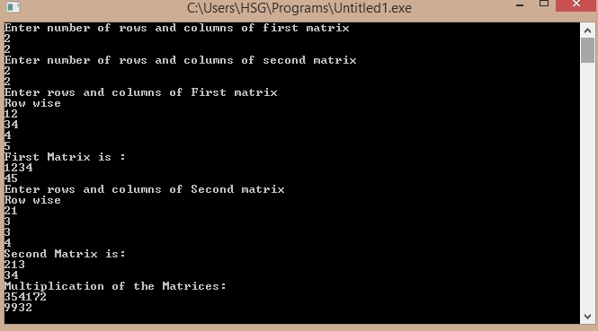

/*C Program for multiplication of Matrix*/
#include<stdio.h>
#include<conio.h>
main()
{
int m1[10][10],i,j,k,m2[10][10],mult[10][10],r1,c1,r2,c2;
printf("Enter number of rows and columns of first matrix \n");
scanf("%d%d",&r1,&c1);
printf("Enter number of rows and columns of second matrix \n");
scanf("%d%d",&r2,&c2);
if(r2==c1)
{
printf("Enter rows and columns of First matrix \n");
printf("Row wise\n");
for(i=0;i<r1;i++)
for(j=0;j<c1;j++)
scanf("%d",&m1[i][j]);
printf("First Matrix is :\n");
for(i=0;i<r1;i++)
{
for(j=0;j<c1;j++)
printf("%d",m1[i][j]);
printf("\n");
}
printf("Enter rows and columns of Second matrix \n");
printf("Row wise\n");
for(i=0;i<r2;i++)
for(j=0;j<c2;j++)
scanf("%d",&m2[i][j]);
printf("Second Matrix is:\n");
for(i=0;i<r2;i++)
{
for(j=0;j<c2;j++)
printf("%d",m2[i][j]);
printf("\n");
}
printf("Multiplication of the Matrices:\n");
for(i=0;i<r1;i++)
{
for(j=0;j<c2;j++)
{
mult[i][j]=0;
for(k=0;k<r1;k++)
mult[i][j]+=m1[i][k]*m2[k][j];
printf("%d",mult[i][j]);
}
printf("\n");
}
}
else
{
printf("Matrix multiplication cannot be done");
}
return 0;
}
Output:
